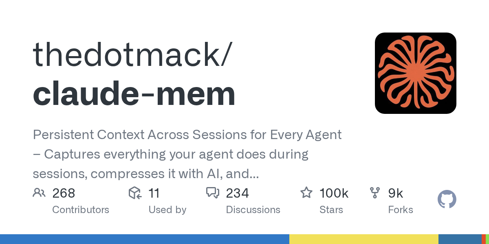

GGitHub Trending 周榜
GitHub Trending 周榜
2026-10-12
⭐ ~99.9k · 本周 +3.8k
为编程 Agent 提供跨会话持久上下文:记录 Agent 在会话中的所有行为,用 AI 压缩后在未来会话中按需注入相关上下文。支持 Claude Code / Codex / Gemini / Copilot / OpenCode 等主流工具。
- 今日 GitHub Trending 周榜在榜,本周涨星 +3,803
- 2025-08 创建,13 个月从 0 涨至 ~99.9k star
- “捕获→压缩→注入”三段式,与向量库方案形成对照
⚡ 效果 ｜ Agent 记忆赛道增速最猛的项目;与本期 HN 热帖《Agents don't need memory》的“活文档”路线形成同向印证——记忆正在从插件变成基础设施。
内网复现·高
作为编程 Agent 插件本地运行、记忆数据存本地;压缩环节需 LLM,可接 OpenAI 兼容端点。